2025 Higher Human Biology - Paper 2 marking instructions
Source: Scottish Qualifications Authority (SQA) / Qualifications Scotland. This is a StemInteract HTML companion, not an official HTML edition. Extracted text is supplied alongside unaltered page images; use the images or original PDF for table layout, diagrams and symbols.
Jump to a question
PDF page 1
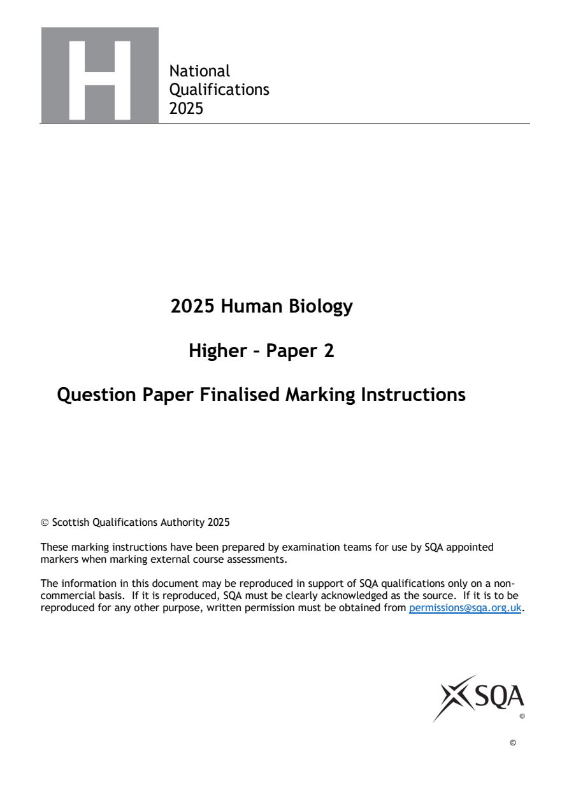
Selectable page text
National
Qualifications
2025
2025 Human Biology
Higher – Paper 2
Question Paper Finalised Marking Instructions
© Scottish Qualifications Authority 2025
These marking instructions have been prepared by examination teams for use by SQA appointed
markers when marking external course assessments.
The information in this document may be reproduced in support of SQA qualifications only on a non-
commercial basis. If it is reproduced, SQA must be clearly acknowledged as the source. If it is to be
reproduced for any other purpose, written permission must be obtained from permissions@sqa.org.uk.
©PDF page 2
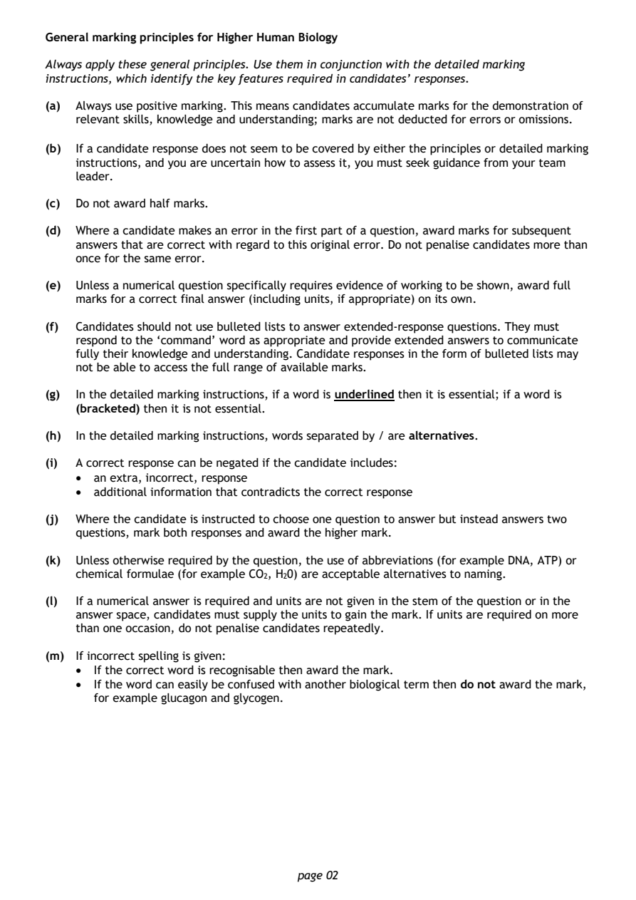
Selectable page text
General marking principles for Higher Human Biology
Always apply these general principles. Use them in conjunction with the detailed marking
instructions, which identify the key features required in candidates’ responses.
(a) Always use positive marking. This means candidates accumulate marks for the demonstration of
relevant skills, knowledge and understanding; marks are not deducted for errors or omissions.
(b) If a candidate response does not seem to be covered by either the principles or detailed marking
instructions, and you are uncertain how to assess it, you must seek guidance from your team
leader.
(c) Do not award half marks.
(d) Where a candidate makes an error in the first part of a question, award marks for subsequent
answers that are correct with regard to this original error. Do not penalise candidates more than
once for the same error.
(e) Unless a numerical question specifically requires evidence of working to be shown, award full
marks for a correct final answer (including units, if appropriate) on its own.
(f) Candidates should not use bulleted lists to answer extended-response questions. They must
respond to the ‘command’ word as appropriate and provide extended answers to communicate
fully their knowledge and understanding. Candidate responses in the form of bulleted lists may
not be able to access the full range of available marks.
(g) In the detailed marking instructions, if a word is underlined then it is essential; if a word is
(bracketed) then it is not essential.
(h) In the detailed marking instructions, words separated by / are alternatives.
(i) A correct response can be negated if the candidate includes:
• an extra, incorrect, response
• additional information that contradicts the correct response
(j) Where the candidate is instructed to choose one question to answer but instead answers two
questions, mark both responses and award the higher mark.
(k) Unless otherwise required by the question, the use of abbreviations (for example DNA, ATP) or
chemical formulae (for example CO , H 0) are acceptable alternatives to naming.
2 2
(l) If a numerical answer is required and units are not given in the stem of the question or in the
answer space, candidates must supply the units to gain the mark. If units are required on more
than one occasion, do not penalise candidates repeatedly.
(m) If incorrect spelling is given:
• If the correct word is recognisable then award the mark.
• If the word can easily be confused with another biological term then do not award the mark,
for example glucagon and glycogen.
page 02PDF page 3
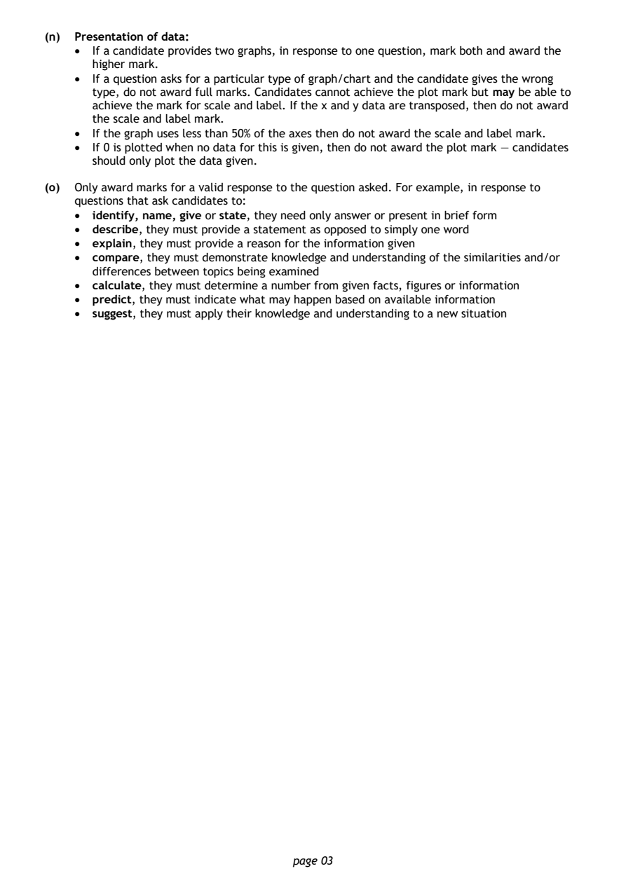
Selectable page text
(n) Presentation of data:
• If a candidate provides two graphs, in response to one question, mark both and award the
higher mark.
• If a question asks for a particular type of graph/chart and the candidate gives the wrong
type, do not award full marks. Candidates cannot achieve the plot mark but may be able to
achieve the mark for scale and label. If the x and y data are transposed, then do not award
the scale and label mark.
• If the graph uses less than 50% of the axes then do not award the scale and label mark.
• If 0 is plotted when no data for this is given, then do not award the plot mark — candidates
should only plot the data given.
(o) Only award marks for a valid response to the question asked. For example, in response to
questions that ask candidates to:
• identify, name, give or state, they need only answer or present in brief form
• describe, they must provide a statement as opposed to simply one word
• explain, they must provide a reason for the information given
• compare, they must demonstrate knowledge and understanding of the similarities and/or
differences between topics being examined
• calculate, they must determine a number from given facts, figures or information
• predict, they must indicate what may happen based on available information
• suggest, they must apply their knowledge and understanding to a new situation
page 03PDF page 4
Question 1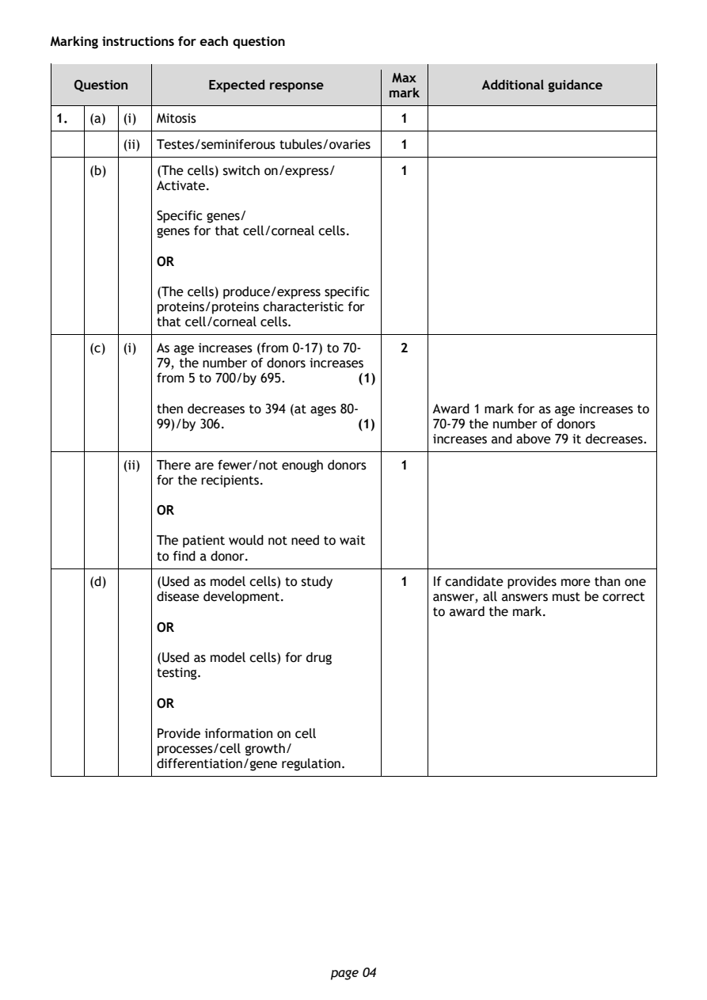
Selectable page text
Marking instructions for each question
Max
Question Expected response Additional guidance
mark
1. (a) (i) Mitosis 1
(ii) Testes/seminiferous tubules/ovaries 1
(b) (The cells) switch on/express/ 1
Activate.
Specific genes/
genes for that cell/corneal cells.
OR
(The cells) produce/express specific
proteins/proteins characteristic for
that cell/corneal cells.
(c) (i) As age increases (from 0-17) to 70- 2
79, the number of donors increases
from 5 to 700/by 695. (1)
then decreases to 394 (at ages 80- Award 1 mark for as age increases to
99)/by 306. (1) 70-79 the number of donors
increases and above 79 it decreases.
(ii) There are fewer/not enough donors 1
for the recipients.
OR
The patient would not need to wait
to find a donor.
(d) (Used as model cells) to study 1 If candidate provides more than one
disease development. answer, all answers must be correct
to award the mark.
OR
(Used as model cells) for drug
testing.
OR
Provide information on cell
processes/cell growth/
differentiation/gene regulation.
page 04PDF page 5
Question 2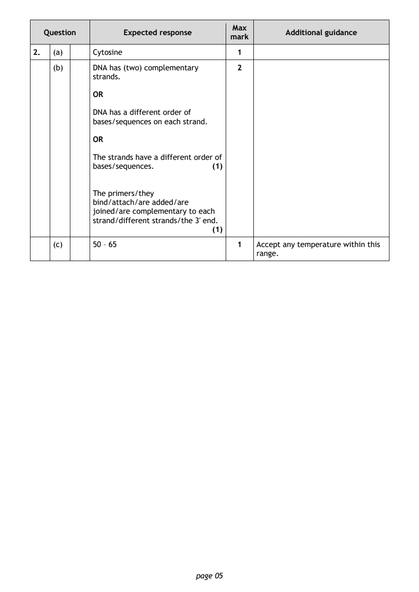
Selectable page text
Max
Question Expected response Additional guidance
mark
2. (a) Cytosine 1
(b) DNA has (two) complementary 2
strands.
OR
DNA has a different order of
bases/sequences on each strand.
OR
The strands have a different order of
bases/sequences. (1)
The primers/they
bind/attach/are added/are
joined/are complementary to each
strand/different strands/the 3′ end.
(1)
(c) 50 – 65 1 Accept any temperature within this
range.
page 05PDF page 6
Question 3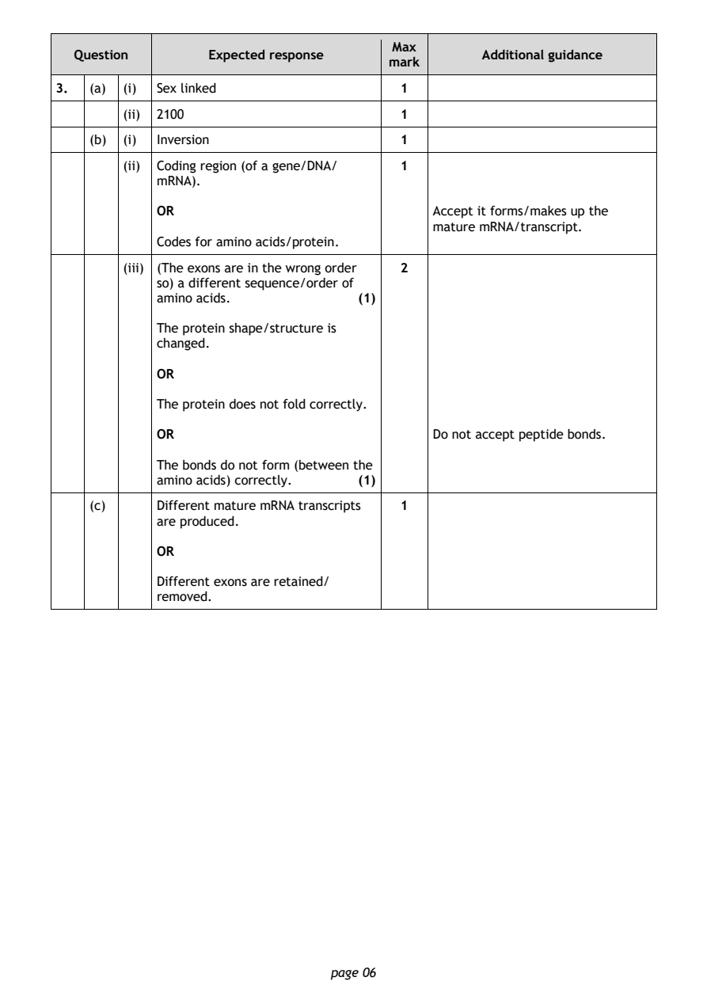
Selectable page text
Max
Question Expected response Additional guidance
mark
3. (a) (i) Sex linked 1
(ii) 2100 1
(b) (i) Inversion 1
(ii) Coding region (of a gene/DNA/ 1
mRNA).
OR Accept it forms/makes up the
mature mRNA/transcript.
Codes for amino acids/protein.
(iii) (The exons are in the wrong order 2
so) a different sequence/order of
amino acids. (1)
The protein shape/structure is
changed.
OR
The protein does not fold correctly.
OR Do not accept peptide bonds.
The bonds do not form (between the
amino acids) correctly. (1)
(c) Different mature mRNA transcripts 1
are produced.
OR
Different exons are retained/
removed.
page 06PDF page 7
Question 4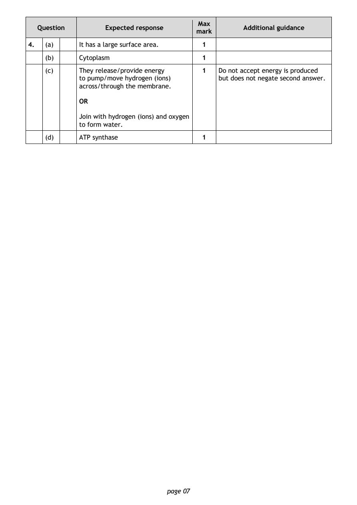
Selectable page text
Max
Question Expected response Additional guidance
mark
4. (a) It has a large surface area. 1
(b) Cytoplasm 1
(c) They release/provide energy 1 Do not accept energy is produced
to pump/move hydrogen (ions) but does not negate second answer.
across/through the membrane.
OR
Join with hydrogen (ions) and oxygen
to form water.
(d) ATP synthase 1
page 07PDF page 8
Question 5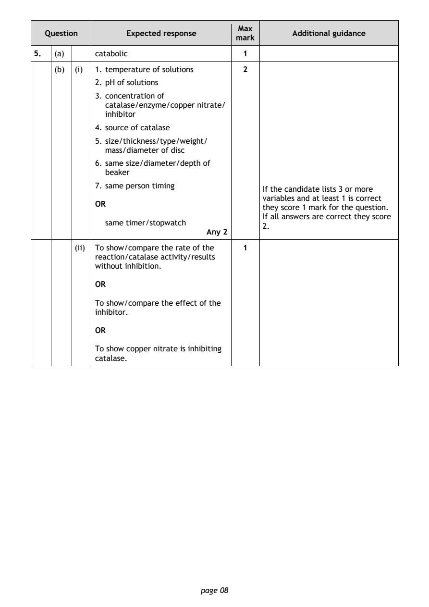
Selectable page text
Max
Question Expected response Additional guidance
mark
5. (a) catabolic 1
(b) (i) 1. temperature of solutions 2
2. pH of solutions
3. concentration of
catalase/enzyme/copper nitrate/
inhibitor
4. source of catalase
5. size/thickness/type/weight/
mass/diameter of disc
6. same size/diameter/depth of
beaker
7. same person timing
If the candidate lists 3 or more
variables and at least 1 is correct
OR
they score 1 mark for the question.
If all answers are correct they score
same timer/stopwatch
2.
Any 2
(ii) To show/compare the rate of the 1
reaction/catalase activity/results
without inhibition.
OR
To show/compare the effect of the
inhibitor.
OR
To show copper nitrate is inhibiting
catalase.
page 08PDF page 9
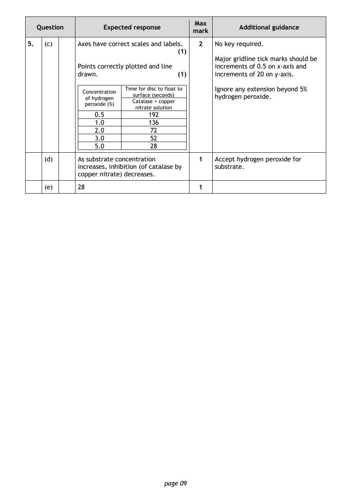
Selectable page text
Max
Question Expected response Additional guidance
mark
5. (c) Axes have correct scales and labels. 2 No key required.
(1)
Major gridline tick marks should be
Points correctly plotted and line increments of 0.5 on x-axis and
drawn. (1) increments of 20 on y-axis.
Time for disc to float to Ignore any extension beyond 5%
Concentration
surface (seconds) hydrogen peroxide.
of hydrogen
Catalase + copper
peroxide (%)
nitrate solution
0.5 192
1.0 136
2.0 72
3.0 52
5.0 28
(d) As substrate concentration 1 Accept hydrogen peroxide for
increases, inhibition (of catalase by substrate.
copper nitrate) decreases.
(e) 28 1
page 09PDF page 10
Question 6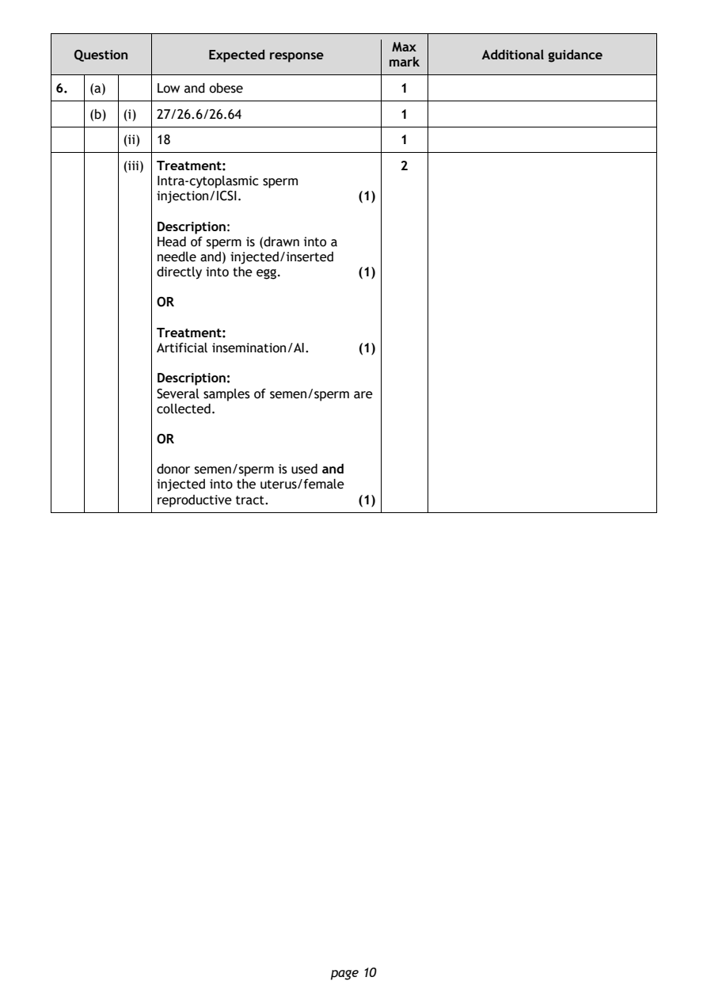
Selectable page text
Max
Question Expected response Additional guidance
mark
6. (a) Low and obese 1
(b) (i) 27/26.6/26.64 1
(ii) 18 1
(iii) Treatment: 2
Intra-cytoplasmic sperm
injection/ICSI. (1)
Description:
Head of sperm is (drawn into a
needle and) injected/inserted
directly into the egg. (1)
OR
Treatment:
Artificial insemination/AI. (1)
Description:
Several samples of semen/sperm are
collected.
OR
donor semen/sperm is used and
injected into the uterus/female
reproductive tract. (1)
page 10PDF page 11
Question 7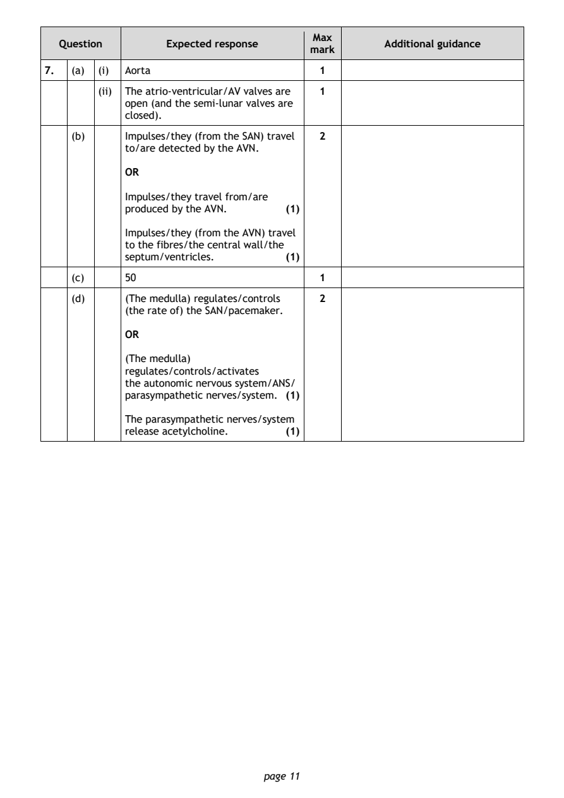
Selectable page text
Max
Question Expected response Additional guidance
mark
7. (a) (i) Aorta 1
(ii) The atrio-ventricular/AV valves are 1
open (and the semi-lunar valves are
closed).
(b) Impulses/they (from the SAN) travel 2
to/are detected by the AVN.
OR
Impulses/they travel from/are
produced by the AVN. (1)
Impulses/they (from the AVN) travel
to the fibres/the central wall/the
septum/ventricles. (1)
(c) 50 1
(d) (The medulla) regulates/controls 2
(the rate of) the SAN/pacemaker.
OR
(The medulla)
regulates/controls/activates
the autonomic nervous system/ANS/
parasympathetic nerves/system. (1)
The parasympathetic nerves/system
release acetylcholine. (1)
page 11PDF page 12
Question 8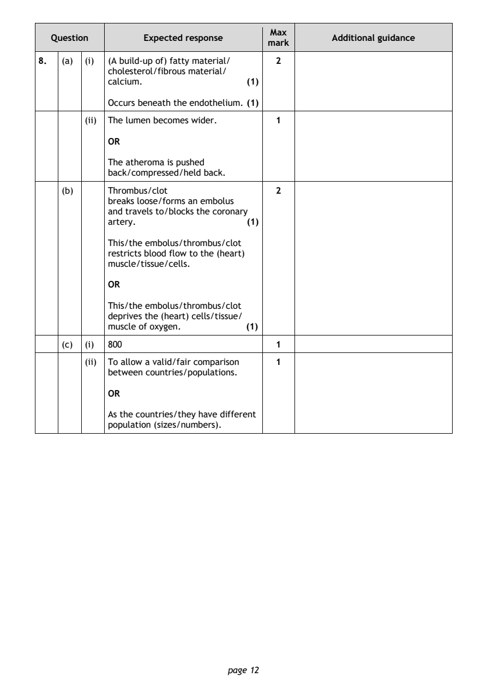
Selectable page text
Max
Question Expected response Additional guidance
mark
8. (a) (i) (A build-up of) fatty material/ 2
cholesterol/fibrous material/
calcium. (1)
Occurs beneath the endothelium. (1)
(ii) The lumen becomes wider. 1
OR
The atheroma is pushed
back/compressed/held back.
(b) Thrombus/clot 2
breaks loose/forms an embolus
and travels to/blocks the coronary
artery. (1)
This/the embolus/thrombus/clot
restricts blood flow to the (heart)
muscle/tissue/cells.
OR
This/the embolus/thrombus/clot
deprives the (heart) cells/tissue/
muscle of oxygen. (1)
(c) (i) 800 1
(ii) To allow a valid/fair comparison 1
between countries/populations.
OR
As the countries/they have different
population (sizes/numbers).
page 12PDF page 13
Question 9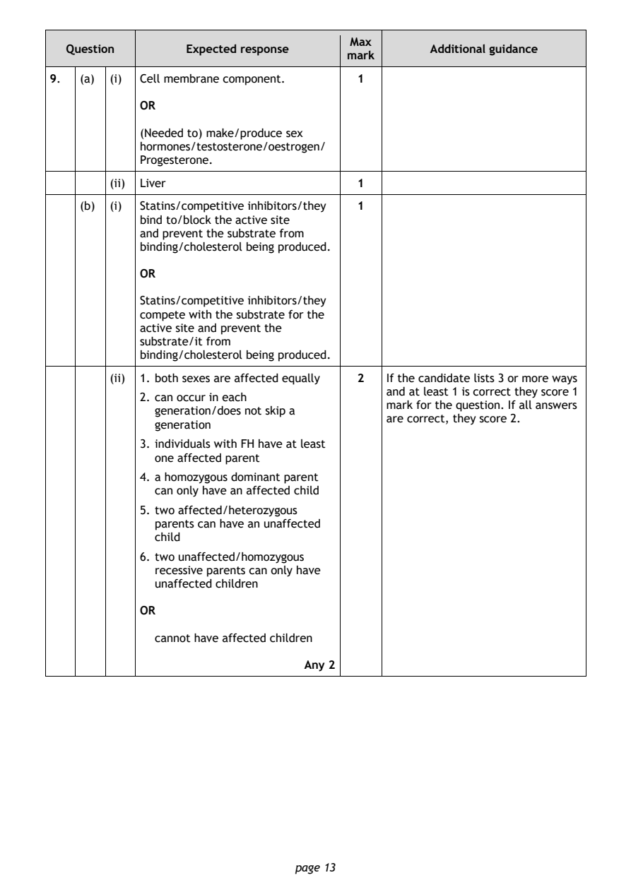
Selectable page text
Max
Question Expected response Additional guidance
mark
9. (a) (i) Cell membrane component. 1
OR
(Needed to) make/produce sex
hormones/testosterone/oestrogen/
Progesterone.
(ii) Liver 1
(b) (i) Statins/competitive inhibitors/they 1
bind to/block the active site
and prevent the substrate from
binding/cholesterol being produced.
OR
Statins/competitive inhibitors/they
compete with the substrate for the
active site and prevent the
substrate/it from
binding/cholesterol being produced.
(ii) 1. both sexes are affected equally 2 If the candidate lists 3 or more ways
and at least 1 is correct they score 1
2. can occur in each
mark for the question. If all answers
generation/does not skip a
are correct, they score 2.
generation
3. individuals with FH have at least
one affected parent
4. a homozygous dominant parent
can only have an affected child
5. two affected/heterozygous
parents can have an unaffected
child
6. two unaffected/homozygous
recessive parents can only have
unaffected children
OR
cannot have affected children
Any 2
page 13PDF page 14
Question 10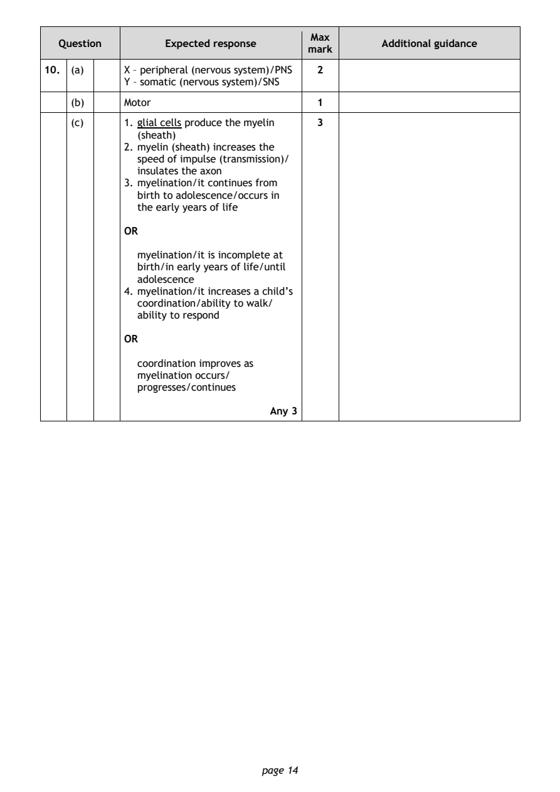
Selectable page text
Max
Question Expected response Additional guidance
mark
10. (a) X – peripheral (nervous system)/PNS 2
Y – somatic (nervous system)/SNS
(b) Motor 1
(c) 1. glial cells produce the myelin 3
(sheath)
2. myelin (sheath) increases the
speed of impulse (transmission)/
insulates the axon
3. myelination/it continues from
birth to adolescence/occurs in
the early years of life
OR
myelination/it is incomplete at
birth/in early years of life/until
adolescence
4. myelination/it increases a child’s
coordination/ability to walk/
ability to respond
OR
coordination improves as
myelination occurs/
progresses/continues
Any 3
page 14PDF page 15
Question 11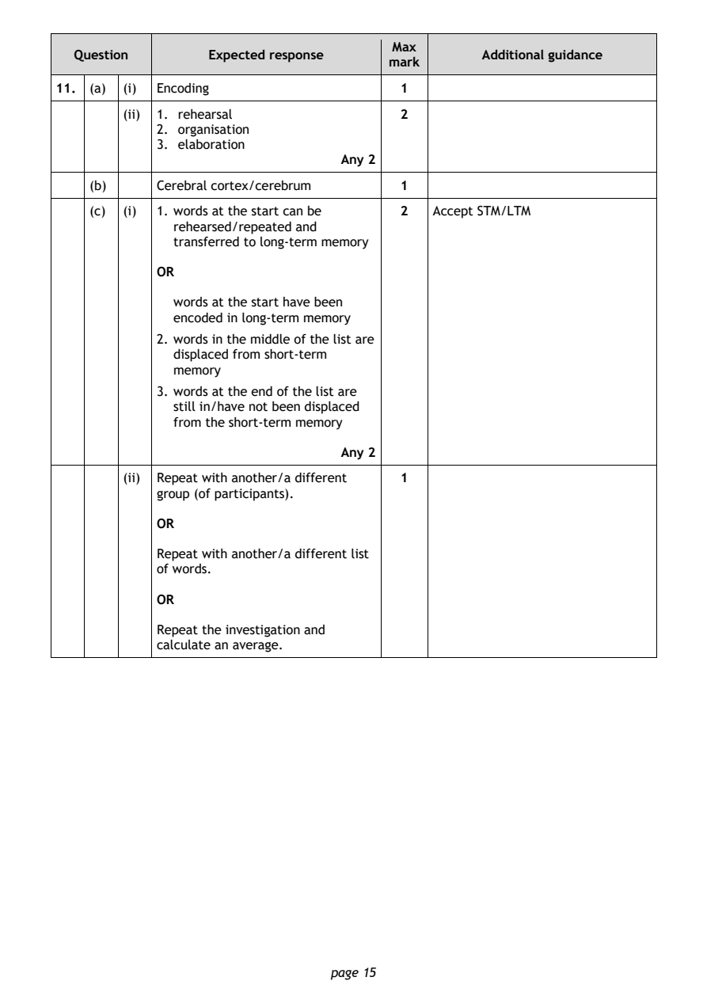
Selectable page text
Max
Question Expected response Additional guidance
mark
11. (a) (i) Encoding 1
(ii) 1. rehearsal 2
2. organisation
3. elaboration
Any 2
(b) Cerebral cortex/cerebrum 1
(c) (i) 1. words at the start can be 2 Accept STM/LTM
rehearsed/repeated and
transferred to long-term memory
OR
words at the start have been
encoded in long-term memory
2. words in the middle of the list are
displaced from short-term
memory
3. words at the end of the list are
still in/have not been displaced
from the short-term memory
Any 2
(ii) Repeat with another/a different 1
group (of participants).
OR
Repeat with another/a different list
of words.
OR
Repeat the investigation and
calculate an average.
page 15PDF page 16
Question 12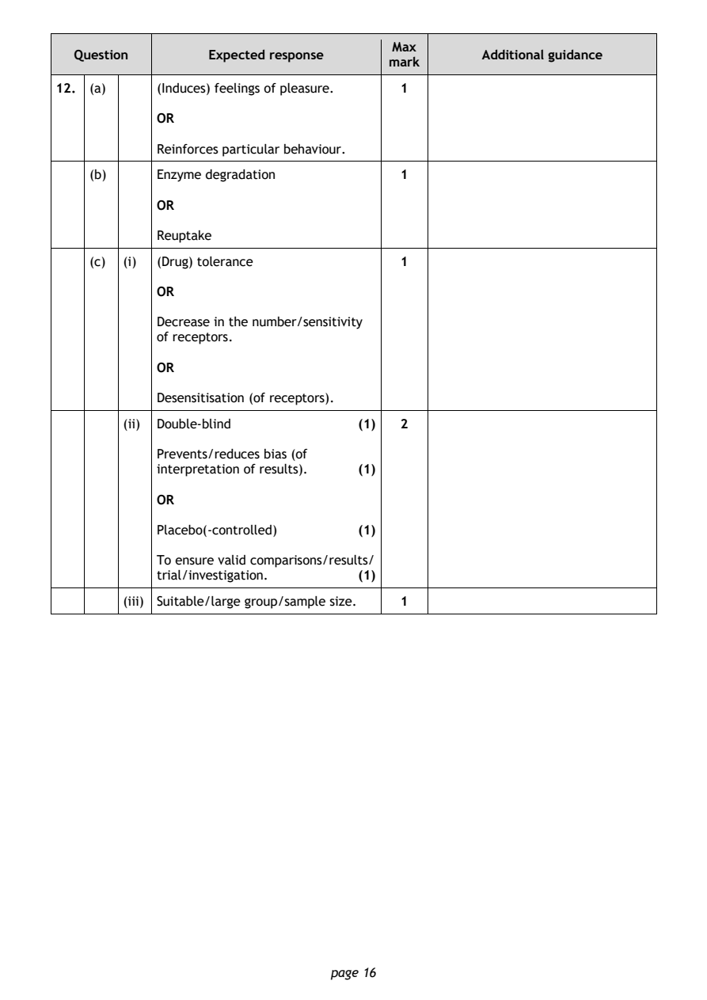
Selectable page text
Max
Question Expected response Additional guidance
mark
12. (a) (Induces) feelings of pleasure. 1
OR
Reinforces particular behaviour.
(b) Enzyme degradation 1
OR
Reuptake
(c) (i) (Drug) tolerance 1
OR
Decrease in the number/sensitivity
of receptors.
OR
Desensitisation (of receptors).
(ii) Double-blind (1) 2
Prevents/reduces bias (of
interpretation of results). (1)
OR
Placebo(-controlled) (1)
To ensure valid comparisons/results/
trial/investigation. (1)
(iii) Suitable/large group/sample size. 1
page 16PDF page 17
Question 13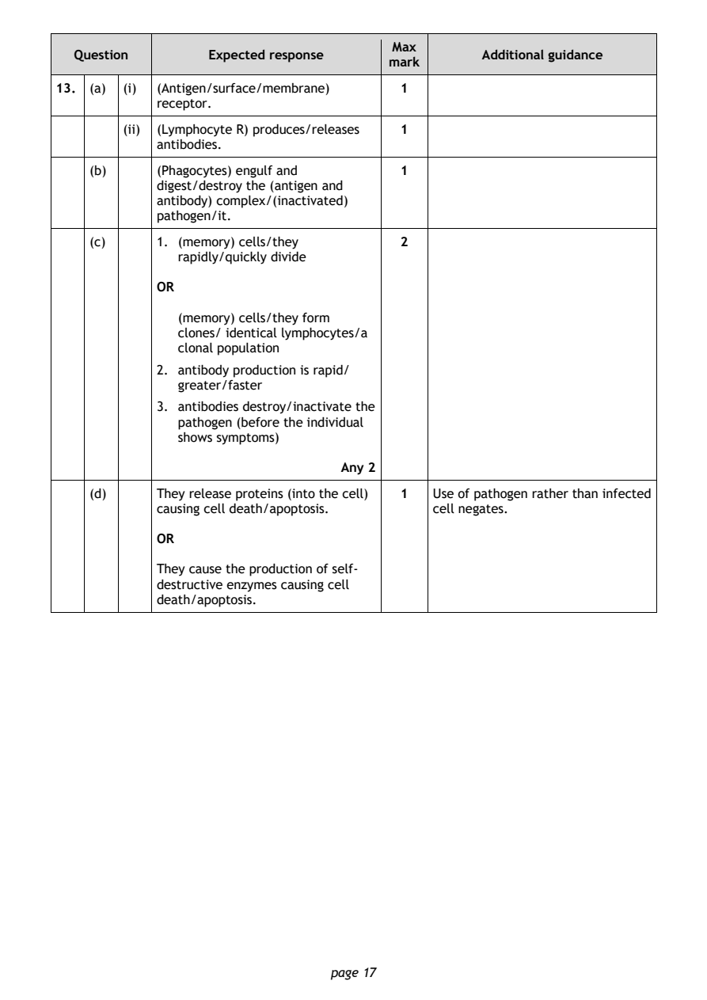
Selectable page text
Max
Question Expected response Additional guidance
mark
13. (a) (i) (Antigen/surface/membrane) 1
receptor.
(ii) (Lymphocyte R) produces/releases 1
antibodies.
(b) (Phagocytes) engulf and 1
digest/destroy the (antigen and
antibody) complex/(inactivated)
pathogen/it.
(c) 1. (memory) cells/they 2
rapidly/quickly divide
OR
(memory) cells/they form
clones/ identical lymphocytes/a
clonal population
2. antibody production is rapid/
greater/faster
3. antibodies destroy/inactivate the
pathogen (before the individual
shows symptoms)
Any 2
(d) They release proteins (into the cell) 1 Use of pathogen rather than infected
causing cell death/apoptosis. cell negates.
OR
They cause the production of self-
destructive enzymes causing cell
death/apoptosis.
page 17PDF page 18
Question 14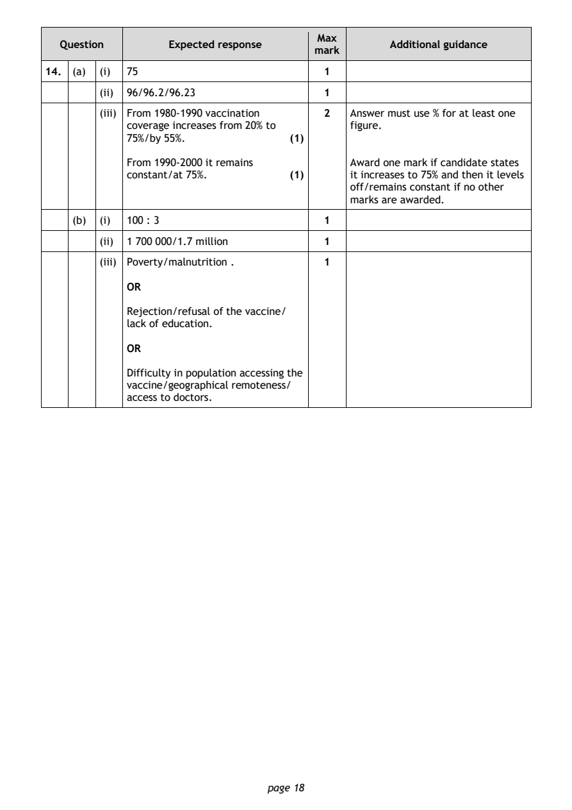
Selectable page text
Max
Question Expected response Additional guidance
mark
14. (a) (i) 75 1
(ii) 96/96.2/96.23 1
(iii) From 1980-1990 vaccination 2 Answer must use % for at least one
coverage increases from 20% to figure.
75%/by 55%. (1)
From 1990-2000 it remains Award one mark if candidate states
constant/at 75%. (1) it increases to 75% and then it levels
off/remains constant if no other
marks are awarded.
(b) (i) 100 : 3 1
(ii) 1 700 000/1.7 million 1
(iii) Poverty/malnutrition . 1
OR
Rejection/refusal of the vaccine/
lack of education.
OR
Difficulty in population accessing the
vaccine/geographical remoteness/
access to doctors.
page 18PDF page 19
Question 15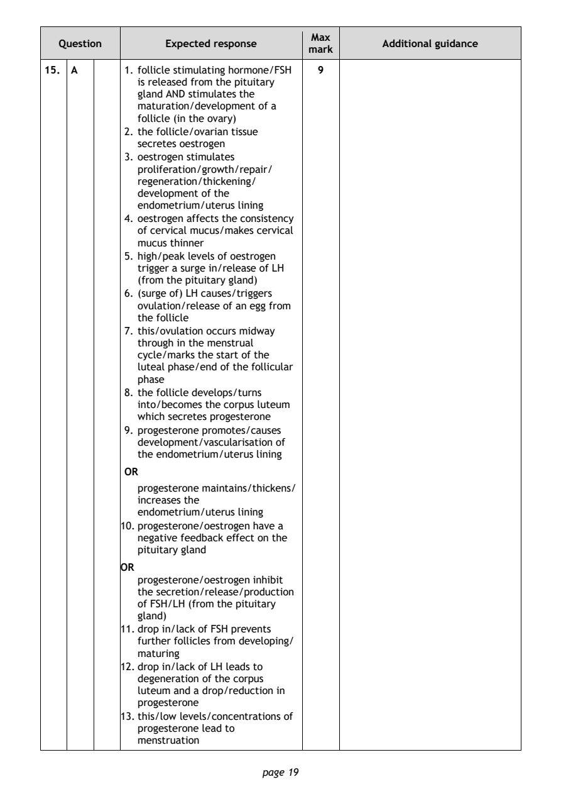
Selectable page text
Max
Question Expected response Additional guidance
mark
15. A 1. follicle stimulating hormone/FSH 9
is released from the pituitary
gland AND stimulates the
maturation/development of a
follicle (in the ovary)
2. the follicle/ovarian tissue
secretes oestrogen
3. oestrogen stimulates
proliferation/growth/repair/
regeneration/thickening/
development of the
endometrium/uterus lining
4. oestrogen affects the consistency
of cervical mucus/makes cervical
mucus thinner
5. high/peak levels of oestrogen
trigger a surge in/release of LH
(from the pituitary gland)
6. (surge of) LH causes/triggers
ovulation/release of an egg from
the follicle
7. this/ovulation occurs midway
through in the menstrual
cycle/marks the start of the
luteal phase/end of the follicular
phase
8. the follicle develops/turns
into/becomes the corpus luteum
which secretes progesterone
9. progesterone promotes/causes
development/vascularisation of
the endometrium/uterus lining
OR
progesterone maintains/thickens/
increases the
endometrium/uterus lining
10. progesterone/oestrogen have a
negative feedback effect on the
pituitary gland
OR
progesterone/oestrogen inhibit
the secretion/release/production
of FSH/LH (from the pituitary
gland)
11. drop in/lack of FSH prevents
further follicles from developing/
maturing
12. drop in/lack of LH leads to
degeneration of the corpus
luteum and a drop/reduction in
progesterone
13. this/low levels/concentrations of
progesterone lead to
menstruation
page 19PDF page 20
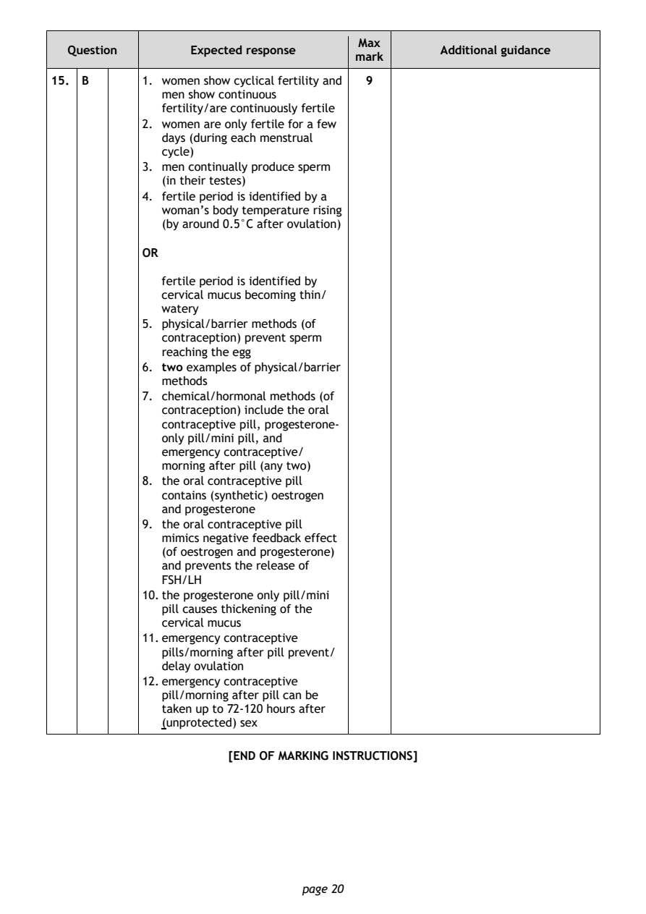
Selectable page text
Max
Question Expected response Additional guidance
mark
15. B 1. women show cyclical fertility and 9
men show continuous
fertility/are continuously fertile
2. women are only fertile for a few
days (during each menstrual
cycle)
3. men continually produce sperm
(in their testes)
4. fertile period is identified by a
woman’s body temperature rising
(by around 0.5°C after ovulation)
OR
fertile period is identified by
cervical mucus becoming thin/
watery
5. physical/barrier methods (of
contraception) prevent sperm
reaching the egg
6. two examples of physical/barrier
methods
7. chemical/hormonal methods (of
contraception) include the oral
contraceptive pill, progesterone-
only pill/mini pill, and
emergency contraceptive/
morning after pill (any two)
8. the oral contraceptive pill
contains (synthetic) oestrogen
and progesterone
9. the oral contraceptive pill
mimics negative feedback effect
(of oestrogen and progesterone)
and prevents the release of
FSH/LH
10. the progesterone only pill/mini
pill causes thickening of the
cervical mucus
11. emergency contraceptive
pills/morning after pill prevent/
delay ovulation
12. emergency contraceptive
pill/morning after pill can be
taken up to 72-120 hours after
(unprotected) sex
[END OF MARKING INSTRUCTIONS]
page 20